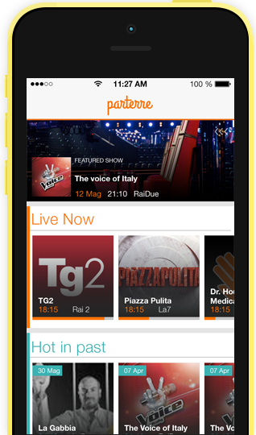

Guarda la tv come a teatro
Parterre ti dà la possibilità di unirti al pubblico più vivace mentre guardi la tv. Esprimi il tuo consenso e il tuo disenso in modi sempre nuovi e rumorosi!

Parterre ti dà la possibilità di unirti al pubblico più vivace mentre guardi la tv. Esprimi il tuo consenso e il tuo disenso in modi sempre nuovi e rumorosi!
Commentare su twitter è divertente, ma i tuoi tweet vengono sommersi in un attimo. Ma adesso è arrivato il momento di farsi sentire.
Senti il resto del pubblico da casa e unisciti al parterre con applausi, fischi, trombette e molto di più.
Cerca il tuo programma TV. Aggiungi gli ospiti in studio, divertiti ad ascoltare e modificare l’umore del pubblico.
Se sei abituato ad usare Twitter per commentare, non dovrai fare avanti ed indietro tra un’app e l’altra.
Usa Parterre mentre guarda i dibattiti su politica, attualità e cronaca, ma anche mentre ti distrai con talent show, eventi sportivi e comici. E magari anche con le tue serie tv preferite.
Parterre è appena nata, ma ha già tante persone che credono in questa applicazione. È incubata presso il Polihub di Milano e Working Capital a Roma. Inoltre è stata presenta in occasione dell’Hackathon #Code4Italy, tenutosi a Maggio di quest'anno presso la Camera dei Deputati. Guarda il video